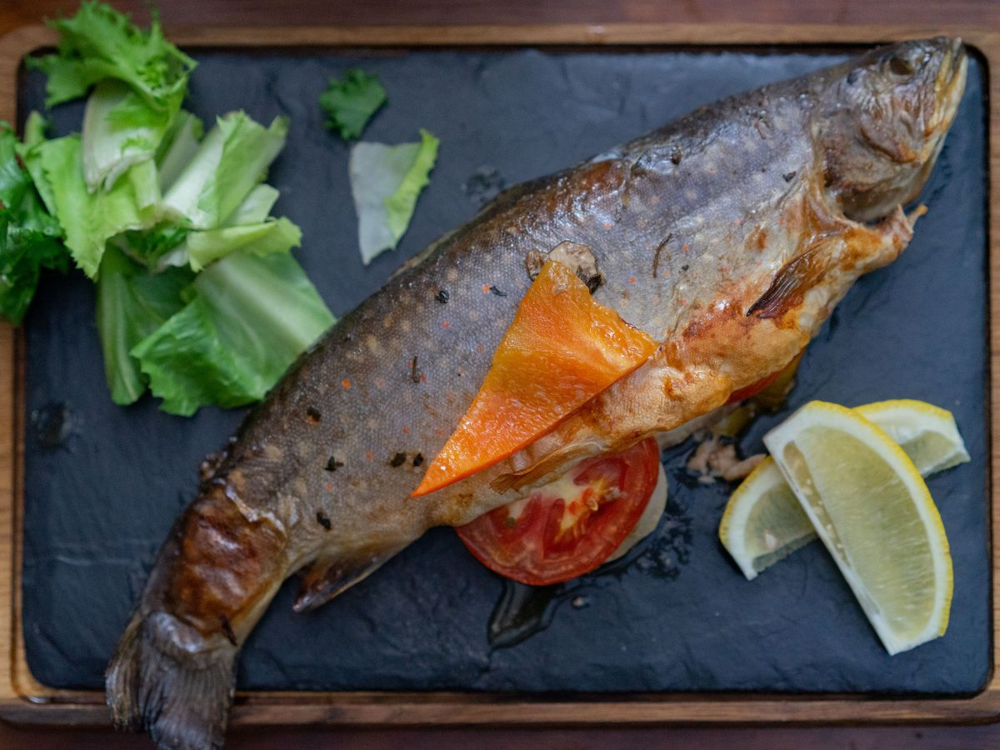
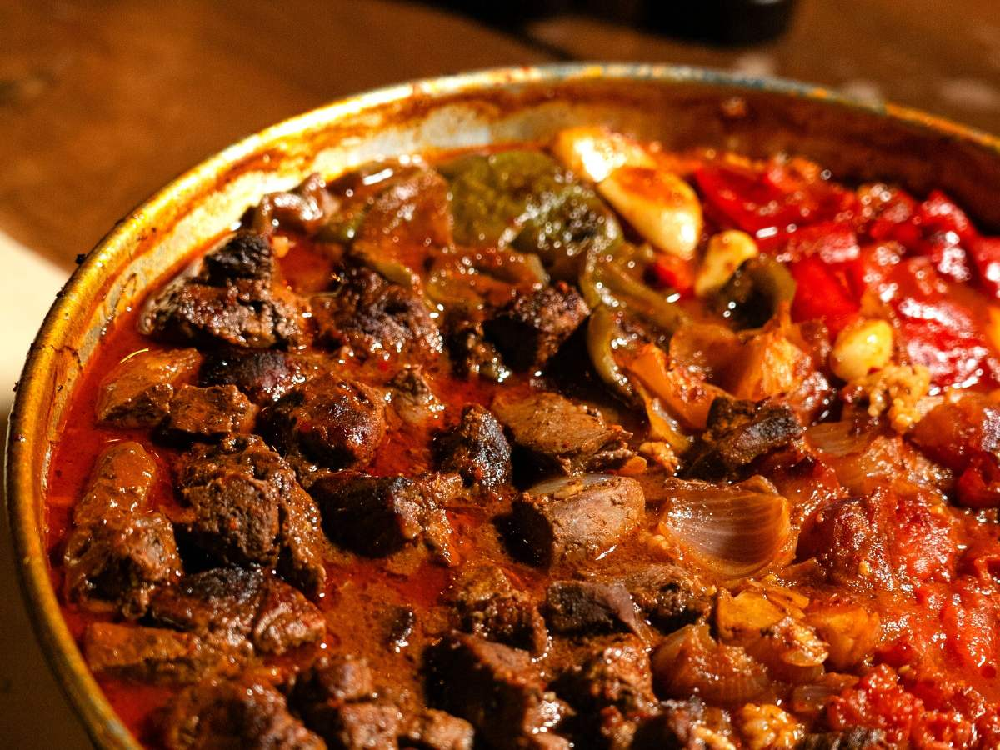
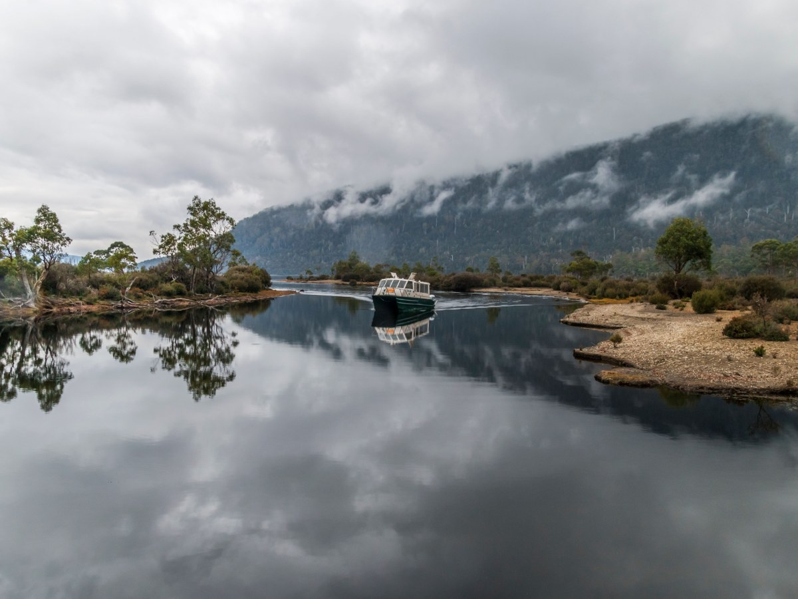
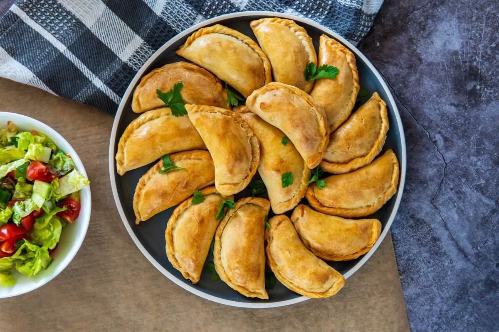
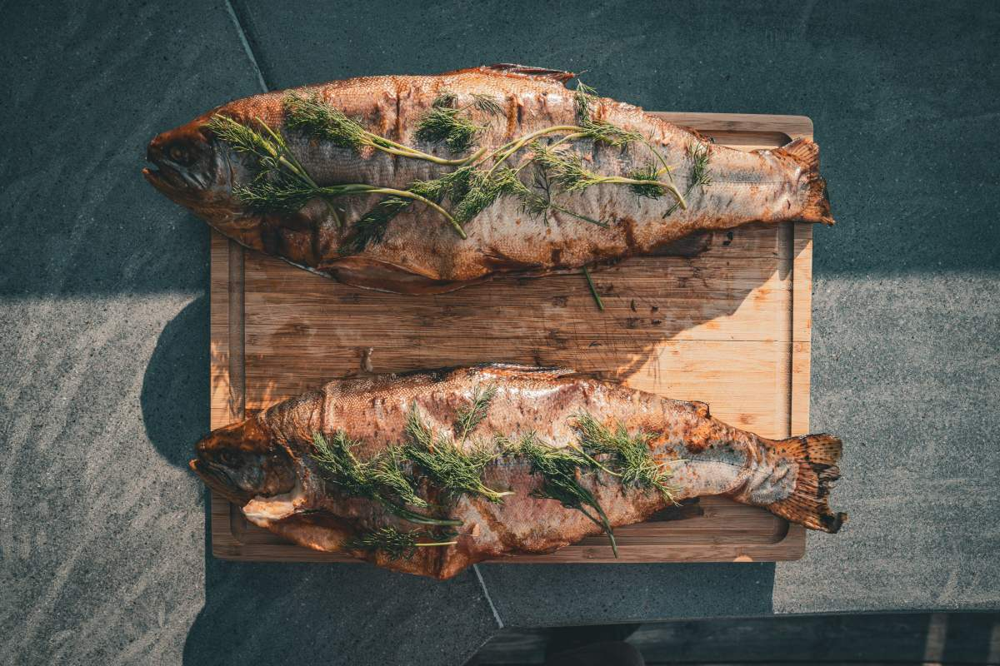
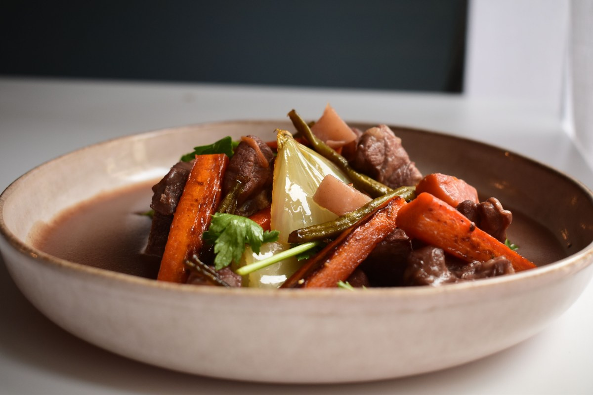
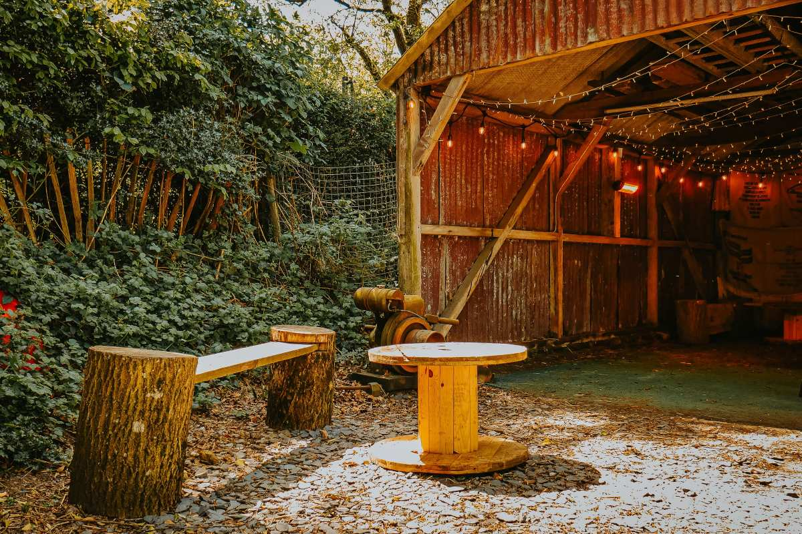

Puerto Fuy · frente a la barcaza
Veinticinco cocinas frente al Pirihueico.
Empanadas, caldos, trucha y jabalí, mientras llega la barcaza.
- 25puestos de comida
- 34socios de Puerto Fuy
- 253reseñas en Google
- 0páginas propias: sólo una ficha ajena
Antes de subir a la barcaza
¿Qué se come en el galpón?
Según el hambre y el tiempo que tenga.
- 01
Si va apurado
Empanadas y sándwiches.
- 02
Si hace frío
Caldos, sopas y guisos.
- 03
Para probar el sur
Trucha, salmón, jabalí y ciervo.
- 04
Para acompañar
Jugos y cerveza artesanal.
Platos de la ficha de la Fundación Huilo Huilo; cada puesto tiene su carta.
Veinticinco puestos, un solo techo.
Frente al puerto de la barcaza
Lo que hay en el galpón
-
Lo que lo distingue
Cocina del pueblo
Treinta y cuatro socios de Puerto Fuy.
-

Del lago
Trucha y salmón
En platos de la casa.
-

Del bosque
Jabalí y ciervo
Carnes del sur.
-
Para el frío
Caldos y sopas
Y guisos para el camino.
-
Para brindar
Cerveza artesanal
Rubia, negra y roja.
-

Afuera
La playa del lago
Junto al terminal de pasajeros.
Platos, socios y servicios salen de la ficha de la Fundación Huilo Huilo.
Octava mejor feria de la región en 2017.
Desde 2015 entre las diez mejores
Humo, lago y barcaza
Un almuerzo en Puerto Fuy




Fotos de referencia: ninguna es del galpón.
Dónde estamos
Frente a la barcaza, Puerto Fuy
- Ubicación
- Frente al puerto de la barcaza
- +56 9 9784 6528
- Verano
- 9 a 24 h
- Invierno
- 10 a 19 h; fin de semana hasta las 22
Horario de temporada según la Fundación: confirme antes de viajar.
Puerto Fuy, Panguipulli Abrir en Google Maps
Para la agrupación
Qué es real y qué falta
Lo verificado
Puestos, socios, platos y horario de la ficha de la Fundación Huilo Huilo, y las 253 reseñas.
Lo de ejemplo
Las fotos: ninguna es del galpón.
Lo que falta
Los nombres de los puestos, fotos propias y el horario de este año.